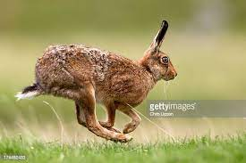
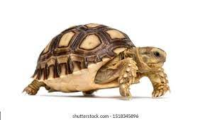

Once upon a time, There was a hare and tortoise lived in a jungle.
One day they commited to get a challenge and that challenge is that they run in the forest and see who can
win that challenge. They fixed date. The date which day they want to run they take position from starting point.
And the on time they started the race.
The Hare & the Tortoise A Hare was making fun of the Tortoise one day for being so slow. "Do you ever get anywhere?" he asked with a mocking laugh. "Yes," replied the Tortoise, "and I get there sooner than you think. I'll run you a race and prove it." The Hare was much amused at the idea of running a race with the Tortoise, but for the fun of the thing he agreed. So the Fox, who had consented to act as judge, marked the distance and started the runners off. The Hare was soon far out of sight, and to make the Tortoise feel very deeply how ridiculous it was for him to try a race with a Hare, he lay down beside the course to take a nap until the Tortoise should catch up. The Tortoise meanwhile kept going slowly but steadily, and, after a time, passed the place where the Hare was sleeping. But the Hare slept on very peacefully; and when at last he did wake up, the Tortoise was near the goal. The Hare now ran his swiftest, but he could not overtake the Tortoise in time. The race is not always to the swift.
 